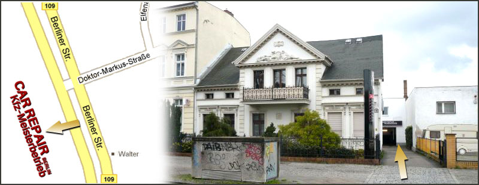

Mit Ihnen gemeinsam finden wir die Mängel an Ihrem Fahrzeug und besprechen direkt die auszuführenden Arbeiten.
Ein bisschen über uns...
Als herstellerunabhängiger Kfz-Meisterbetrieb bieten wir sämtliche
Leistungen rund um ihr Fahrzeug an. Über einen
Zugriff auf die Fahrzeugdaten der Kfz-Hersteller ist Ihr Fahrzeug
auch bei individuellen Problemen bei uns in besten Händen.
Durch die Versorgung mit Erstausrüsterteilen, welche ausschließlich
namhafte Kfz-Zulieferbetriebe sind, können wir auf deren Kompetenz
und Know-how zurückgreifen und garantieren höchste Qualität zu
günstigen Preisen. Aufgrund einer gezielten Auswahl der Recycling-
und Entsorgungsfirmen stehen wir für eine umweltbewusste
Arbeitsweise.
Schauen Sie doch einfach mal vorbei. Das CARREPAIR-TEAM steht Ihnen
und Ihrem Fahrzeug jederzeit zur Verfügung.
Leistungen

Keine Spielereien, keine Tricks, wir sorgen für einen schnellen
Ölwechsel.

Reifen abgefahren? Wir beraten Sie fachkundig bei der Auswahl
ihrer Reifen oder Felgen!

An Ihrem Fahrzeug ist etwas anderes kaputt? Kommen Sie gerne
vorbei!
Sollte Ihre Haupt- und Abgasuntersuchung anstehen, können Sie diese amtliche Prüfung schnell und bequem bei uns durchführen lassen. Sie benötigen eine Vollabnahme oder wollen Umbauten eintragen lassen? Wir fahren Ihr Fahrzeug über den TÜV.
Reifen abgefahren? Wir beraten Sie fachkundig bei der Auswahl ihrer Reifen oder Felgen!
Als modernes Unternehmen bieten wir unseren Kunden die computergestützte Fehlerdiagnose an, darüber hinaus führen wir ebenso die professionelle fachmännische Diagnostik an allen Mercedes-Benz Modellen durch!
Nachrüstung von Zubehör aller Art, wie Standheizungen, Anhängerkupplungen oder Einparkhilfen gehören genauso zur Angebotspalette, wie der Einbau von Telefon-, Audio- und Navigationssystemen.
In unserer markenunabhängigen Meisterwerkstatt führen wir alle am
PKW anfallenden Reparaturen fachmännisch aus. Selbstverständlich
besorgen wir Ihnen auch jedes gewünschte Ersatzteil für Ihr
Fahrzeug.
In punkto Preis/Leistungsverhältnis stellt unser Angebot eine
kostengünstige Alternative gegenüber den Herstellerwerkstütten
dar. Reden Sie mit uns, wir machen Ihnen ein individuelles
Kostenangebot!
Wir arbeiten nach Herstellerangaben und haben das Inspektionsprogramm durch eigene Erfahrungen erweitert.
Ein defekter Motor oder ein defektes Getriebe müssen nicht immer durch neue Teile ersetzt werden. Wir reparieren diese nach klassischem Handwerk.
Sie sind zu Recht stolz auf die makellose Optik Ihres Fahrzeuges.
Gerade deshalb ist es so wichtig, bei Karosserie- und Lackarbeiten
voll und ganz auf Qualität zu setzen.
Mit unserem Fachwissen, dem technischen Know-How, sowie der
Flexibilität unserer Mitarbeiter garantieren Ihnen einen möglichst
kurzen Werkstattaufenthalt und sichern ihnen den Werterhalt Ihres
Fahrzeuges über Jahre hinaus.
Neben Karosserie- und Lackarbeiten bieten wir auch perfekt
abgestimmte Schönheitsreparaturen, die die kleinen Spuren des
Alltags beseitigen und die Form und Schönheit Ihres Fahrzeuges wie
am ersten Tag erhalten. Denn der erste Eindruck ist immer der
wichtigste.
- Reparaturlackierung, Einzelteile, Ausbesserungslackierungen, Lackaufbereitungen (sprich: jegliche Polierarbeiten)
- Ganzlackierung, Umlackierung der Fahrzeugfarbe
- Sonderlackierung Farbeffektlackierungen (Airbruschlackierungen), Lackierungen auf eigene Vorstellung des Kunden, Motorradlackierungen
- Alle lackierfähigen Teile/Produkte. Z. B. Handyhüllen / -schalen
- Unfallinstandsetzung
- Karosserieumbauten bzw. -änderungen, ERA, Kunststoff-Polyester
- Oltimerrestaurierung
- Richtbank
Anfahrt und Routenplaner
CarRepair-Berlin
Inhaber: Arne Bartz
Berliner Str. 12
D-13127 Berlin
Tel: 030 / 91 20 89 78
Funk: 0172 / 640 58 63
Fax: 030 / 91 20 89 79
eMail: info@carrepair-berlin.de

Kontakt Formular
Datenschutz
Datenschutzerklärung
Diese Datenschutzerklärung klärt Sie über die Art, den Umfang und Zweck der Verarbeitung von personenbezogenen Daten (nachfolgend kurz „Daten“) innerhalb unseres Onlineangebotes und der mit ihm verbundenen Webseiten, Funktionen und Inhalte sowie externen Onlinepräsenzen, wie z.B. unser Social Media Profile auf (nachfolgend gemeinsam bezeichnet als „Onlineangebot“). Im Hinblick auf die verwendeten Begrifflichkeiten, wie z.B. „Verarbeitung“ oder „Verantwortlicher“ verweisen wir auf die Definitionen im Art. 4 der Datenschutzgrundverordnung (DSGVO)
Verantwortlicher
Arne Bartz / Carrepair Berlin
Berliner Str.12 13127 Berlin
E-Mail Adresse: info@carrepair-berlin.de
Geschäftsführer/ Inhaber: Arne Bartz
Arten der verarbeiteten Daten:
- Bestandsdaten (z.B., Namen, Adressen). - Kontaktdaten (z.B., E-Mail, Telefonnummern). - Inhaltsdaten (z.B., Texteingaben, Fotografien, Videos). - Nutzungsdaten (z.B., besuchte Webseiten, Interesse an Inhalten, Zugriffszeiten). - Meta-/Kommunikationsdaten (z.B., Geräte-Informationen, IP-Adressen). Kategorien betroffener Personen Besucher und Nutzer des Onlineangebotes (Nachfolgend bezeichnen wir die betroffenen Personen zusammenfassend auch als „Nutzer“). Zweck der Verarbeitung - Zurverfügungstellung des Onlineangebotes, seiner Funktionen und Inhalte. - Beantwortung von Kontaktanfragen und Kommunikation mit Nutzern. - Sicherheitsmaßnahmen. - Reichweitenmessung/Marketing Verwendete Begrifflichkeiten „Personenbezogene Daten“ sind alle Informationen, die sich auf eine identifizierte oder identifizierbare natürliche Person (im Folgenden „betroffene Person“) beziehen; als identifizierbar wird eine natürliche Person angesehen, die direkt oder indirekt, insbesondere mittels Zuordnung zu einer Kennung wie einem Namen, zu einer Kennnummer, zu Standortdaten, zu einer Online-Kennung (z.B. Cookie) oder zu einem oder mehreren besonderen Merkmalen identifiziert werden kann, die Ausdruck der physischen, physiologischen, genetischen, psychischen, wirtschaftlichen, kulturellen oder sozialen Identität dieser natürlichen Person sind. „Verarbeitung“ ist jeder mit oder ohne Hilfe automatisierter Verfahren ausgeführte Vorgang oder jede solche Vorgangsreihe im Zusammenhang mit personenbezogenen Daten. Der Begriff reicht weit und umfasst praktisch jeden Umgang mit Daten. „Pseudonymisierung“ die Verarbeitung personenbezogener Daten in einer Weise, dass die personenbezogenen Daten ohne Hinzuziehung zusätzlicher Informationen nicht mehr einer spezifischen betroffenen Person zugeordnet werden können, sofern diese zusätzlichen Informationen gesondert aufbewahrt werden und technischen und organisatorischen Maßnahmen unterliegen, die gewährleisten, dass die personenbezogenen Daten nicht einer identifizierten oder identifizierbaren natürlichen Person zugewiesen werden. „Profiling“ jede Art der automatisierten Verarbeitung personenbezogener Daten, die darin besteht, dass diese personenbezogenen Daten verwendet werden, um bestimmte persönliche Aspekte, die sich auf eine natürliche Person beziehen, zu bewerten, insbesondere um Aspekte bezüglich Arbeitsleistung, wirtschaftliche Lage, Gesundheit, persönliche Vorlieben, Interessen, Zuverlässigkeit, Verhalten, Aufenthaltsort oder Ortswechsel dieser natürlichen Person zu analysieren oder vorherzusagen. Als „Verantwortlicher“ wird die natürliche oder juristische Person, Behörde, Einrichtung oder andere Stelle, die allein oder gemeinsam mit anderen über die Zwecke und Mittel der Verarbeitung von personenbezogenen Daten entscheidet, bezeichnet. „Auftragsverarbeiter“ eine natürliche oder juristische Person, Behörde, Einrichtung oder andere Stelle, die personenbezogene Daten im Auftrag des Verantwortlichen verarbeitet. Maßgebliche Rechtsgrundlagen Nach Maßgabe des Art. 13 DSGVO teilen wir Ihnen die Rechtsgrundlagen unserer Datenverarbeitungen mit. Sofern die Rechtsgrundlage in der Datenschutzerklärung nicht genannt wird, gilt Folgendes: Die Rechtsgrundlage für die Einholung von Einwilligungen ist Art. 6 Abs. 1 lit. a und Art. 7 DSGVO, die Rechtsgrundlage für die Verarbeitung zur Erfüllung unserer Leistungen und Durchführung vertraglicher Maßnahmen sowie Beantwortung von Anfragen ist Art. 6 Abs. 1 lit. b DSGVO, die Rechtsgrundlage für die Verarbeitung zur Erfüllung unserer rechtlichen Verpflichtungen ist Art. 6 Abs. 1 lit. c DSGVO, und die Rechtsgrundlage für die Verarbeitung zur Wahrung unserer berechtigten Interessen ist Art. 6 Abs. 1 lit. f DSGVO. Für den Fall, dass lebenswichtige Interessen der betroffenen Person oder einer anderen natürlichen Person eine Verarbeitung personenbezogener Daten erforderlich machen, dient Art. 6 Abs. 1 lit. d DSGVO als Rechtsgrundlage. Sicherheitsmaßnahmen Wir treffen nach Maßgabe des Art. 32 DSGVO unter Berücksichtigung des Stands der Technik, der Implementierungskosten und der Art, des Umfangs, der Umstände und der Zwecke der Verarbeitung sowie der unterschiedlichen Eintrittswahrscheinlichkeit und Schwere des Risikos für die Rechte und Freiheiten natürlicher Personen, geeignete technische und organisatorische Maßnahmen, um ein dem Risiko angemessenes Schutzniveau zu gewährleisten. Zu den Maßnahmen gehören insbesondere die Sicherung der Vertraulichkeit, Integrität und Verfügbarkeit von Daten durch Kontrolle des physischen Zugangs zu den Daten, als auch des sie betreffenden Zugriffs, der Eingabe, Weitergabe, der Sicherung der Verfügbarkeit und ihrer Trennung. Des Weiteren haben wir Verfahren eingerichtet, die eine Wahrnehmung von Betroffenenrechten, Löschung von Daten und Reaktion auf Gefährdung der Daten gewährleisten. Ferner berücksichtigen wir den Schutz personenbezogener Daten bereits bei der Entwicklung, bzw. Auswahl von Hardware, Software sowie Verfahren, entsprechend dem Prinzip des Datenschutzes durch Technikgestaltung und durch datenschutzfreundliche Voreinstellungen (Art. 25 DSGVO). Zusammenarbeit mit Auftragsverarbeitern und Dritten Sofern wir im Rahmen unserer Verarbeitung Daten gegenüber anderen Personen und Unternehmen (Auftragsverarbeitern oder Dritten) offenbaren, sie an diese übermitteln oder ihnen sonst Zugriff auf die Daten gewähren, erfolgt dies nur auf Grundlage einer gesetzlichen Erlaubnis (z.B. wenn eine Übermittlung der Daten an Dritte, wie an Zahlungsdienstleister, gem. Art. 6 Abs. 1 lit. b DSGVO zur Vertragserfüllung erforderlich ist), Sie eingewilligt haben, eine rechtliche Verpflichtung dies vorsieht oder auf Grundlage unserer berechtigten Interessen (z.B. beim Einsatz von Beauftragten, Webhostern, etc.). Sofern wir Dritte mit der Verarbeitung von Daten auf Grundlage eines sog. „Auftragsverarbeitungsvertrages“ beauftragen, geschieht dies auf Grundlage des Art. 28 DSGVO. Übermittlungen in Drittländer Sofern wir Daten in einem Drittland (d.h. außerhalb der Europäischen Union (EU) oder des Europäischen Wirtschaftsraums (EWR)) verarbeiten oder dies im Rahmen der Inanspruchnahme von Diensten Dritter oder Offenlegung, bzw. Übermittlung von Daten an Dritte geschieht, erfolgt dies nur, wenn es zur Erfüllung unserer (vor)vertraglichen Pflichten, auf Grundlage Ihrer Einwilligung, aufgrund einer rechtlichen Verpflichtung oder auf Grundlage unserer berechtigten Interessen geschieht. Vorbehaltlich gesetzlicher oder vertraglicher Erlaubnisse, verarbeiten oder lassen wir die Daten in einem Drittland nur beim Vorliegen der besonderen Voraussetzungen der Art. 44 ff. DSGVO verarbeiten. D.h. die Verarbeitung erfolgt z.B. auf Grundlage besonderer Garantien, wie der offiziell anerkannten Feststellung eines der EU entsprechenden Datenschutzniveaus (z.B. für die USA durch das „Privacy Shield“) oder Beachtung offiziell anerkannter spezieller vertraglicher Verpflichtungen (so genannte „Standardvertragsklauseln“). Rechte der betroffenen Personen Sie haben das Recht, eine Bestätigung darüber zu verlangen, ob betreffende Daten verarbeitet werden und auf Auskunft über diese Daten sowie auf weitere Informationen und Kopie der Daten entsprechend Art. 15 DSGVO. Sie haben entsprechend. Art. 16 DSGVO das Recht, die Vervollständigung der Sie betreffenden Daten oder die Berichtigung der Sie betreffenden unrichtigen Daten zu verlangen. Sie haben nach Maßgabe des Art. 17 DSGVO das Recht zu verlangen, dass betreffende Daten unverzüglich gelöscht werden, bzw. alternativ nach Maßgabe des Art. 18 DSGVO eine Einschränkung der Verarbeitung der Daten zu verlangen. Sie haben das Recht zu verlangen, dass die Sie betreffenden Daten, die Sie uns bereitgestellt haben nach Maßgabe des Art. 20 DSGVO zu erhalten und deren Übermittlung an andere Verantwortliche zu fordern. Sie haben ferner gem. Art. 77 DSGVO das Recht, eine Beschwerde bei der zuständigen Aufsichtsbehörde einzureichen. Widerrufsrecht Sie haben das Recht, erteilte Einwilligungen gem. Art. 7 Abs. 3 DSGVO mit Wirkung für die Zukunft zu widerrufen Widerspruchsrecht Sie können der künftigen Verarbeitung der Sie betreffenden Daten nach Maßgabe des Art. 21 DSGVO jederzeit widersprechen. Der Widerspruch kann insbesondere gegen die Verarbeitung für Zwecke der Direktwerbung erfolgen. Cookies und Widerspruchsrecht bei Direktwerbung Als „Cookies“ werden kleine Dateien bezeichnet, die auf Rechnern der Nutzer gespeichert werden. Innerhalb der Cookies können unterschiedliche Angaben gespeichert werden. Ein Cookie dient primär dazu, die Angaben zu einem Nutzer (bzw. dem Gerät auf dem das Cookie gespeichert ist) während oder auch nach seinem Besuch innerhalb eines Onlineangebotes zu speichern. Als temporäre Cookies, bzw. „Session-Cookies“ oder „transiente Cookies“, werden Cookies bezeichnet, die gelöscht werden, nachdem ein Nutzer ein Onlineangebot verlässt und seinen Browser schließt. In einem solchen Cookie kann z.B. der Inhalt eines Warenkorbs in einem Onlineshop oder ein Login-Status gespeichert werden. Als „permanent“ oder „persistent“ werden Cookies bezeichnet, die auch nach dem Schließen des Browsers gespeichert bleiben. So kann z.B. der Login-Status gespeichert werden, wenn die Nutzer diese nach mehreren Tagen aufsuchen. Ebenso können in einem solchen Cookie die Interessen der Nutzer gespeichert werden, die für Reichweitenmessung oder Marketingzwecke verwendet werden. Als „Third-Party-Cookie“ werden Cookies bezeichnet, die von anderen Anbietern als dem Verantwortlichen, der das Onlineangebot betreibt, angeboten werden (andernfalls, wenn es nur dessen Cookies sind spricht man von „First-Party Cookies“). Wir können temporäre und permanente Cookies einsetzen und klären hierüber im Rahmen unserer Datenschutzerklärung auf. Falls die Nutzer nicht möchten, dass Cookies auf ihrem Rechner gespeichert werden, werden sie gebeten die entsprechende Option in den Systemeinstellungen ihres Browsers zu deaktivieren. Gespeicherte Cookies können in den Systemeinstellungen des Browsers gelöscht werden. Der Ausschluss von Cookies kann zu Funktionseinschränkungen dieses Onlineangebotes führen. Ein genereller Widerspruch gegen den Einsatz der zu Zwecken des Onlinemarketing eingesetzten Cookies kann bei einer Vielzahl der Dienste, vor allem im Fall des Trackings, über die US-amerikanische Seite http://www.aboutads.info/choices/ oder die EU-Seite http://www.youronlinechoices.com/ erklärt werden. Des Weiteren kann die Speicherung von Cookies mittels deren Abschaltung in den Einstellungen des Browsers erreicht werden. Bitte beachten Sie, dass dann gegebenenfalls nicht alle Funktionen dieses Onlineangebotes genutzt werden können. Löschung von Daten Die von uns verarbeiteten Daten werden nach Maßgabe der Art. 17 und 18 DSGVO gelöscht oder in ihrer Verarbeitung eingeschränkt. Sofern nicht im Rahmen dieser Datenschutzerklärung ausdrücklich angegeben, werden die bei uns gespeicherten Daten gelöscht, sobald sie für ihre Zweckbestimmung nicht mehr erforderlich sind und der Löschung keine gesetzlichen Aufbewahrungspflichten entgegenstehen. Sofern die Daten nicht gelöscht werden, weil sie für andere und gesetzlich zulässige Zwecke erforderlich sind, wird deren Verarbeitung eingeschränkt. D.h. die Daten werden gesperrt und nicht für andere Zwecke verarbeitet. Das gilt z.B. für Daten, die aus handels- oder steuerrechtlichen Gründen aufbewahrt werden müssen. Nach gesetzlichen Vorgaben in Deutschland, erfolgt die Aufbewahrung insbesondere für 10 Jahre gemäß §§ 147 Abs. 1 AO, 257 Abs. 1 Nr. 1 und 4, Abs. 4 HGB (Bücher, Aufzeichnungen, Lageberichte, Buchungsbelege, Handelsbücher, für Besteuerung relevanter Unterlagen, etc.) und 6 Jahre gemäß § 257 Abs. 1 Nr. 2 und 3, Abs. 4 HGB (Handelsbriefe). Nach gesetzlichen Vorgaben in Österreich erfolgt die Aufbewahrung insbesondere für 7 J gemäß § 132 Abs. 1 BAO (Buchhaltungsunterlagen, Belege/Rechnungen, Konten, Belege, Geschäftspapiere, Aufstellung der Einnahmen und Ausgaben, etc.), für 22 Jahre im Zusammenhang mit Grundstücken und für 10 Jahre bei Unterlagen im Zusammenhang mit elektronisch erbrachten Leistungen, Telekommunikations-, Rundfunk- und Fernsehleistungen, die an Nichtunternehmer in EU-Mitgliedstaaten erbracht werden und für die der Mini-One-Stop-Shop (MOSS) in Anspruch genommen wird. Externe Zahlungsdienstleister Wir setzen externe Zahlungsdienstleister ein, über deren Plattformen die Nutzer und wir Zahlungstransaktionen vornehmen können (z.B., jeweils mit Link zur Datenschutzerklärung, Paypal (https://www.paypal.com/de/webapps/mpp/ua/privacy-full), Klarna (https://www.klarna.com/de/datenschutz/), Skrill (https://www.skrill.com/de/fusszeile/datenschutzrichtlinie/), Giropay (https://www.giropay.de/rechtliches/datenschutz-agb/), Visa (https://www.visa.de/datenschutz), Mastercard (https://www.mastercard.de/de-de/datenschutz.html), American Express (https://www.americanexpress.com/de/content/privacy-policy-statement.html) Im Rahmen der Erfüllung von Verträgen setzen wir die Zahlungsdienstleister auf Grundlage des Art. 6 Abs. 1 lit. b. DSGVO ein. Im Übrigen setzen wir externe Zahlungsdienstleister auf Grundlage unserer berechtigten Interessen gem. Art. 6 Abs. 1 lit. f. DSGVO ein, um unseren Nutzern effektive und sichere Zahlungsmöglichkeit zu bieten. Zu den, durch die Zahlungsdienstleister verarbeiteten Daten gehören Bestandsdaten, wie z.B. der Name und die Adresse, Bankdaten, wie z.B. Kontonummern oder Kreditkartennummern, Passwörter, TANs und Prüfsummen sowie die Vertrags-, Summen und empfängerbezogenen Angaben. Die Angaben sind erforderlich, um die Transaktionen durchzuführen. Die eingegebenen Daten werden jedoch nur durch die Zahlungsdienstleister verarbeitet und bei diesen gespeichert. D.h. wir erhalten keine konto- oder kreditkartenbezogenen Informationen, sondern lediglich Informationen mit Bestätigung oder Negativbeauskunftung der Zahlung. Unter Umständen werden die Daten seitens der Zahlungsdienstleister an Wirtschaftsauskunfteien übermittelt. Diese Übermittlung bezweckt die Identitäts- und Bonitätsprüfung. Hierzu verweisen wir auf die AGB und Datenschutzhinweise der Zahlungsdienstleister. Für die Zahlungsgeschäfte gelten die Geschäftsbedingungen und die Datenschutzhinweise der jeweiligen Zahlungsdienstleister, welche innerhalb der jeweiligen Webseiten, bzw. Transaktionsapplikationen abrufbar sind. Wir verweisen auf diese ebenfalls zwecks weiterer Informationen und Geltendmachung von Widerrufs-, Auskunfts- und anderen Betroffenenrechten. Administration, Finanzbuchhaltung, Büroorganisation, Kontaktverwaltung Wir verarbeiten Daten im Rahmen von Verwaltungsaufgaben sowie Organisation unseres Betriebs, Finanzbuchhaltung und Befolgung der gesetzlichen Pflichten, wie z.B. der Archivierung. Hierbei verarbeiten wir dieselben Daten, die wir im Rahmen der Erbringung unserer vertraglichen Leistungen verarbeiten. Die Verarbeitungsgrundlagen sind Art. 6 Abs. 1 lit. c. DSGVO, Art. 6 Abs. 1 lit. f. DSGVO. Von der Verarbeitung sind Kunden, Interessenten, Geschäftspartner und Websitebesucher betroffen. Der Zweck und unser Interesse an der Verarbeitung liegt in der Administration, Finanzbuchhaltung, Büroorganisation, Archivierung von Daten, also Aufgaben die der Aufrechterhaltung unserer Geschäftstätigkeiten, Wahrnehmung unserer Aufgaben und Erbringung unserer Leistungen dienen. Die Löschung der Daten im Hinblick auf vertragliche Leistungen und die vertragliche Kommunikation entspricht den, bei diesen Verarbeitungstätigkeiten genannten Angaben. Wir offenbaren oder übermitteln hierbei Daten an die Finanzverwaltung, Berater, wie z.B., Steuerberater oder Wirtschaftsprüfer sowie weitere Gebührenstellen und Zahlungsdienstleister. Ferner speichern wir auf Grundlage unserer betriebswirtschaftlichen Interessen Angaben zu Lieferanten, Veranstaltern und sonstigen Geschäftspartnern, z.B. zwecks späterer Kontaktaufnahme. Diese mehrheitlich unternehmensbezogenen Daten, speichern wir grundsätzlich dauerhaft. Kommentare und Beiträge Wenn Nutzer Kommentare oder sonstige Beiträge hinterlassen, können ihre IP-Adressen auf Grundlage unserer berechtigten Interessen im Sinne des Art. 6 Abs. 1 lit. f. DSGVO für 7 Tage gespeichert werden. Das erfolgt zu unserer Sicherheit, falls jemand in Kommentaren und Beiträgen widerrechtliche Inhalte hinterlässt (Beleidigungen, verbotene politische Propaganda, etc.). In diesem Fall können wir selbst für den Kommentar oder Beitrag belangt werden und sind daher an der Identität des Verfassers interessiert. Des Weiteren behalten wir uns vor, auf Grundlage unserer berechtigten Interessen gem. Art. 6 Abs. 1 lit. f. DSGVO, die Angaben der Nutzer zwecks Spamerkennung zu verarbeiten. Auf derselben Rechtsgrundlage behalten wir uns vor, im Fall von Umfragen die IP-Adressen der Nutzer für deren Dauer zu speichern und Cookis zu verwenden, um Mehrfachabstimmungen zu vermeiden. Die im Rahmen der Kommentare und Beiträge angegebenen Daten, werden von uns bis zum Widerspruch der Nutzer dauerhaft gespeichert. Kontaktaufnahme Bei der Kontaktaufnahme mit uns (z.B. per Kontaktformular, E-Mail, Telefon oder via sozialer Medien) werden die Angaben des Nutzers zur Bearbeitung der Kontaktanfrage und deren Abwicklung gem. Art. 6 Abs. 1 lit. b) DSGVO verarbeitet. Die Angaben der Nutzer können in einem Customer-Relationship-Management System ("CRM System") oder vergleichbarer Anfragenorganisation gespeichert werden. Wir löschen die Anfragen, sofern diese nicht mehr erforderlich sind. Wir überprüfen die Erforderlichkeit alle zwei Jahre; Ferner gelten die gesetzlichen Archivierungspflichten. Hosting und E-Mail-Versand Die von uns in Anspruch genommenen Hosting-Leistungen dienen der Zurverfügungstellung der folgenden Leistungen: Infrastruktur- und Plattformdienstleistungen, Rechenkapazität, Speicherplatz und Datenbankdienste, E-Mail-Versand, Sicherheitsleistungen sowie technische Wartungsleistungen, die wir zum Zwecke des Betriebs dieses Onlineangebotes einsetzen. Hierbei verarbeiten wir, bzw. unser Hostinganbieter Bestandsdaten, Kontaktdaten, Inhaltsdaten, Vertragsdaten, Nutzungsdaten, Meta- und Kommunikationsdaten von Kunden, Interessenten und Besuchern dieses Onlineangebotes auf Grundlage unserer berechtigten Interessen an einer effizienten und sicheren Zurverfügungstellung dieses Onlineangebotes gem. Art. 6 Abs. 1 lit. f DSGVO i.V.m. Art. 28 DSGVO (Abschluss Auftragsverarbeitungsvertrag). Erhebung von Zugriffsdaten und Logfiles Wir, bzw. unser Hostinganbieter, erhebt auf Grundlage unserer berechtigten Interessen im Sinne des Art. 6 Abs. 1 lit. f. DSGVO Daten über jeden Zugriff auf den Server, auf dem sich dieser Dienst befindet (sogenannte Serverlogfiles). Zu den Zugriffsdaten gehören Name der abgerufenen Webseite, Datei, Datum und Uhrzeit des Abrufs, übertragene Datenmenge, Meldung über erfolgreichen Abruf, Browsertyp nebst Version, das Betriebssystem des Nutzers, Referrer URL (die zuvor besuchte Seite), IP-Adresse und der anfragende Provider. Logfile-Informationen werden aus Sicherheitsgründen (z.B. zur Aufklärung von Missbrauchs- oder Betrugshandlungen) für die Dauer von maximal 7 Tagen gespeichert und danach gelöscht. Daten, deren weitere Aufbewahrung zu Beweiszwecken erforderlich ist, sind bis zur endgültigen Klärung des jeweiligen Vorfalls von der Löschung ausgenommen. Google Analytics Wir setzen auf Grundlage unserer berechtigten Interessen (d.h. Interesse an der Analyse, Optimierung und wirtschaftlichem Betrieb unseres Onlineangebotes im Sinne des Art. 6 Abs. 1 lit. f. DSGVO) Google Analytics, einen Webanalysedienst der Google LLC („Google“) ein. Google verwendet Cookies. Die durch das Cookie erzeugten Informationen über Benutzung des Onlineangebotes durch die Nutzer werden in der Regel an einen Server von Google in den USA übertragen und dort gespeichert. Google ist unter dem Privacy-Shield-Abkommen zertifiziert und bietet hierdurch eine Garantie, das europäische Datenschutzrecht einzuhalten (https://www.privacyshield.gov/participant?id=a2zt000000001L5AAI&status=Active). Google wird diese Informationen in unserem Auftrag benutzen, um die Nutzung unseres Onlineangebotes durch die Nutzer auszuwerten, um Reports über die Aktivitäten innerhalb dieses Onlineangebotes zusammenzustellen und um weitere, mit der Nutzung dieses Onlineangebotes und der Internetnutzung verbundene Dienstleistungen, uns gegenüber zu erbringen. Dabei können aus den verarbeiteten Daten pseudonyme Nutzungsprofile der Nutzer erstellt werden. Wir setzen Google Analytics nur mit aktivierter IP-Anonymisierung ein. Das bedeutet, die IP-Adresse der Nutzer wird von Google innerhalb von Mitgliedstaaten der Europäischen Union oder in anderen Vertragsstaaten des Abkommens über den Europäischen Wirtschaftsraum gekürzt. Nur in Ausnahmefällen wird die volle IP-Adresse an einen Server von Google in den USA übertragen und dort gekürzt. Die von dem Browser des Nutzers übermittelte IP-Adresse wird nicht mit anderen Daten von Google zusammengeführt. Die Nutzer können die Speicherung der Cookies durch eine entsprechende Einstellung ihrer Browser-Software verhindern; die Nutzer können darüber hinaus die Erfassung der durch das Cookie erzeugten und auf ihre Nutzung des Onlineangebotes bezogenen Daten an Google sowie die Verarbeitung dieser Daten durch Google verhindern, indem sie das unter folgendem Link verfügbare Browser-Plugin herunterladen und installieren: http://tools.google.com/dlpage/gaoptout?hl=de. Weitere Informationen zur Datennutzung durch Google, Einstellungs- und Widerspruchsmöglichkeiten, erfahren Sie in der Datenschutzerklärung von Google (https://policies.google.com/technologies/ads) sowie in den Einstellungen für die Darstellung von Werbeeinblendungen durch Google (https://adssettings.google.com/authenticated). Die personenbezogenen Daten der Nutzer werden nach 14 Monaten gelöscht oder anonymisiert. Google Maps Wir binden die Landkarten des Dienstes “Google Maps” des Anbieters Google LLC, 1600 Amphitheatre Parkway, Mountain View, CA 94043, USA, ein. Zu den verarbeiteten Daten können insbesondere IP-Adressen und Standortdaten der Nutzer gehören, die jedoch nicht ohne deren Einwilligung (im Regelfall im Rahmen der Einstellungen ihrer Mobilgeräte vollzogen), erhoben werden. Die Daten können in den USA verarbeitet werden. Datenschutzerklärung: https://www.google.com/policies/privacy/, Opt-Out: https://adssettings.google.com/authenticated. Erstellt mit Datenschutz-Generator.de von RA Dr. Thomas Schwenke